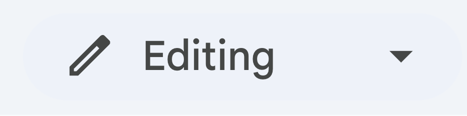

Accessible Components: Dropdown Case Study
In this case study, I conducted research, analysis, and proposed a redesign of dropdown components across multiple applications.
Why dropdowns?
Dropdown menus are widely used UI components, yet their accessibility varies across applications. Many dropdowns lack adequate support for keyboard navigation, screen readers, and visual cues for different states, making them difficult for users with disabilities to navigate.
Component Analysis
I will analyze existing dropdown implementations in Google Docs, Slack, and Instagram. The scope of this case study is limited to dropdown with a limited set of options. My findings are summarized in the input and output tables below.
Google Docs
Slack
Inputs
Outputs
State Model Development
Mapping transitions between different states of the dropdown component for both keyboard and mouse users of the application. The revised version (changes shown in red) proposes a key change: an improved hover state that makes the selection process more efficient.
Component Redesign
🔹 Key Changes: Higher contrast, improved focus indicators, clearer selection.
Reflection
- Accessibility:
- Provided clear visual indicators (e.g., borders, highlights) to help users identify interactive elements.
- Usability:
- Ensured keyboard navigability and that screen reader-friendly labels are used, allowing users to tab through options and make selections.
- Improve accessibility gaps:
- Better contrast and visibility: The original grey dropdown blended into the background, making it difficult for low-vision users to identify. Changing it to white significantly improves readability.
- Stronger visual feedback for selection: The open state now has a clearer focus shadow, ensuring users understand which option is currently active.
- Mismatch solution:
- Many dropdowns don’t provide enough visual contrast, making them inaccessible for users with low vision or color blindness. By increasing the contrast, my design ensures better usability for everyone.
- For neurodivergent users who rely on consistent and strong visual cues, the new dropdown state provides a clearer and more predictable interaction.
- Keyboard inputs:
- Having the option for users to navigate the site entirely by keyboard makes the site significantly more accessible, especially for users that struggle with precise movements required by mouse and touchpad.
- At the same time, some keyboard shortcuts are complex and require multiple keys to be simultaneously pressed, which may unintentionally exclude users that cannot perform complex motor tasks.
- Prioritization:
- Many components are designed with mouse or touch users in mind, leaving keyboard users with a subpar experience when it comes to navigating the different functionalities of a webpage / application.